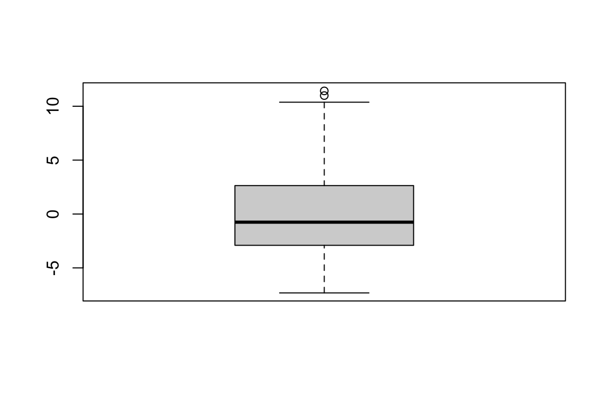
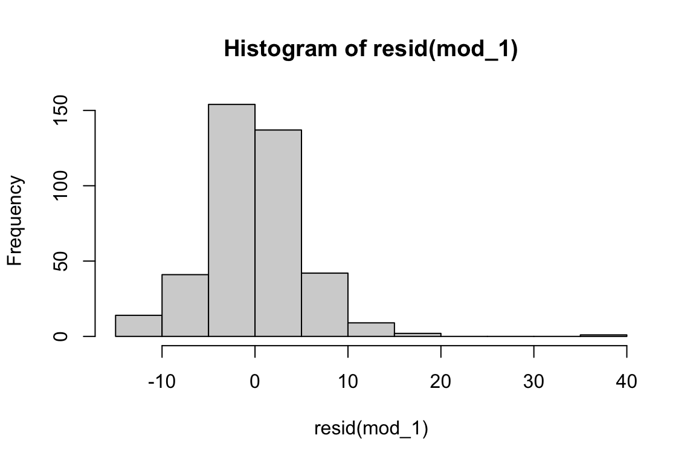
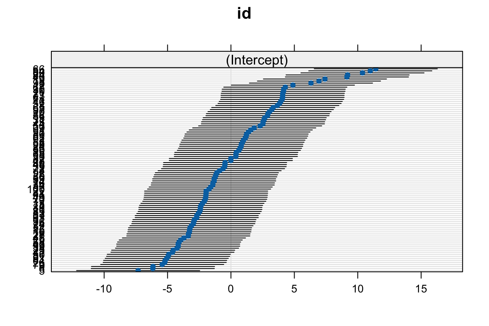

library(tidyr) #Allows for us to manipulate the data structure
library(data.table) #Allows for us to manipulate the data structure
library(lme4) #Allows us to fit mixed effects models
library(lattice) #for plotting random effects4 Mixed Effects Model
Learning Objectives
- Understand how to fit mixed effects models to longitudinal data
- Understand how to interpret results
4.1 Introduction
Lets consider a few simple cases in understanding the Mixed-Effect Model:
\[\mu_{ij} = E(Y_{ij} \mid {X_{ij},t_{ij}})\]
where \(X_{ij}\) are the explanatory variables and \(t_{ij}\) is time.
Individual intercepts: The coefficient \(b_i\) represents each \(i\)th individual starting level.
Consider the three following cases:
\(\mu_{ij} = \mu + b_i\)
Model with only time: \(\mu_{ij} = \beta_0 + \beta_1 t_{ij} + b_i\). The systematic component is \(\beta_0 + \beta_1 t_{ij}\) and random component is \(b_i\)
Model with only covariates: \(\mu_{ij} = \beta_0 + b_i + \beta_1 X_{ij}\). The systematic component is \(\beta_0 + \beta_1 X_{ij}\) and random component is \(b_i\)
In all of these cases (a-c), the coefficient \(b_i\) represents the difference between the overall mean intercept and an individual’s intercept. For example, if \(b_i = -2\) then the individual \(i\) starts at \(2\) units lower in their outcome on average.
In the Mixed-Effects model, we assume that each individual has their own intercept \(b_i\), where \(b_i \overset{\text{iid}}{\sim} N(0,\sigma^2_b)\) and where \(\sigma^2_b\) can be obtained from the summary R output. In addition, we assume that errors have constant variance \(e_{ij} \overset{\text{iid}}{\sim} N(0,\sigma^2_e)\) where \(\sigma^2_e\) can be obtained from the summary R output.
Using the TLC data as an example, consider the two models
- a simple Mixed-Effects model with a random intercept is defined as:
\[E(y_{ij} \mid X_{ij}) = \beta_0 + \beta_{trt}trt + \beta_{T}T + b_{0,i}\]
Individual slopes: The interpretation of a random slope in the model is that each individual has a unique growth rate or trajectory.
- a simple Mixed-Effects model with a random intercept and random slope for time is defined as:
\[E(y_{ij} \mid X_{ij}) = \beta_0 + \beta_{trt}trt + \beta_{T}T + b_{0,i} + b_{T,i}T\]
The systematic component is \(\beta_0 + \beta_{trt}trt + \beta_{T}T\) and random component is \(b_{0,i} + b_{T,i}T\). Here every \(i\)th individual has a unique starting point \(b_{0,i}\), hence the average starting point of blood lead levels (BLL) for each individual is \(\beta_0 + b_{0,i}\). Further, each \(i\)th individual has a unique growth trajectory of BLL \(b_{T,i}\) where the average changes in BLL is given by \(\beta_1 + b_{T,i}\).Thus, the new slope for time is \((\beta_{T} + b_{T,i})T\)
Note: If the growth rate is explained by explanatory variables (\(X_{ij}\)) then include an interaction term. Remember that explanatory variables in the random component of the Mixed-Effects model must be time-varying.
4.2 Brief Review of what we learned so far
Models for LDA with Continuous Outcomes
- Marginal Models
- GLS
- Define covariance model
- Compare models using AIC, BIC, likelihood ratio test
- GEE
- Compare models using QIC
- Define covariance model and link function
- GLS
-
- Specify random effects
- Compare models using AIC, BIC
- Other packages allow you to specify the covariance model
4.3 Fitting Mixed Effect Models to the TLC data
Here we will learn how to use R to fit Mixed-Effects (subject-specific) Models for longitudinal data, when the outcome of interest is a continuous variable (linear models).
The (1|id) means that we are allowing the intercept, represented by 1, to vary by patient.
# label this model object as mod_1
mod_1 <- lmer(measurements ~ 1 + group + time + (1 | id), data = long_TLC, REML = TRUE)
summary(mod_1)Linear mixed model fit by REML ['lmerMod']
Formula: measurements ~ 1 + group + time + (1 | id)
Data: long_TLC
REML criterion at convergence: 2670.2
Scaled residuals:
Min 1Q Median 3Q Max
-2.4885 -0.3686 -0.0176 0.4514 6.3428
Random effects:
Groups Name Variance Std.Dev.
id (Intercept) 22.09 4.700
Residual 33.98 5.829
Number of obs: 400, groups: id, 100
Fixed effects:
Estimate Std. Error t value
(Intercept) 25.7647 0.8512 30.269
groupTreatment -5.5775 1.1060 -5.043
time -0.4010 0.1222 -3.281
Correlation of Fixed Effects:
(Intr) grpTrt
groupTrtmnt -0.650
time -0.395 0.000# added - some helpful functions
coef(mod_1) # plot all coefficients for each individual$id
(Intercept) groupTreatment time
1 27.32695 -5.5775 -0.401
2 26.75096 -5.5775 -0.401
3 28.43016 -5.5775 -0.401
4 24.87134 -5.5775 -0.401
5 18.44525 -5.5775 -0.401
6 19.60083 -5.5775 -0.401
7 23.66160 -5.5775 -0.401
8 29.42143 -5.5775 -0.401
9 19.61708 -5.5775 -0.401
10 29.90894 -5.5775 -0.401
11 23.35465 -5.5775 -0.401
12 30.65103 -5.5775 -0.401
13 23.51715 -5.5775 -0.401
14 24.43981 -5.5775 -0.401
15 22.50602 -5.5775 -0.401
16 22.48797 -5.5775 -0.401
17 22.88520 -5.5775 -0.401
18 32.70760 -5.5775 -0.401
19 33.17886 -5.5775 -0.401
20 28.80933 -5.5775 -0.401
21 29.85477 -5.5775 -0.401
22 28.68294 -5.5775 -0.401
23 21.20780 -5.5775 -0.401
24 26.56860 -5.5775 -0.401
25 24.58426 -5.5775 -0.401
26 20.53974 -5.5775 -0.401
27 22.39949 -5.5775 -0.401
28 22.41574 -5.5775 -0.401
29 21.80365 -5.5775 -0.401
30 29.92699 -5.5775 -0.401
31 28.37599 -5.5775 -0.401
32 22.65228 -5.5775 -0.401
33 26.15331 -5.5775 -0.401
34 24.32967 -5.5775 -0.401
35 26.18942 -5.5775 -0.401
36 28.64683 -5.5775 -0.401
37 29.60199 -5.5775 -0.401
38 21.51295 -5.5775 -0.401
39 24.43981 -5.5775 -0.401
40 34.91223 -5.5775 -0.401
41 23.80605 -5.5775 -0.401
42 21.15183 -5.5775 -0.401
43 21.60503 -5.5775 -0.401
44 28.28571 -5.5775 -0.401
45 22.05643 -5.5775 -0.401
46 29.69227 -5.5775 -0.401
47 25.75608 -5.5775 -0.401
48 25.28844 -5.5775 -0.401
49 23.77174 -5.5775 -0.401
50 20.86294 -5.5775 -0.401
51 20.80877 -5.5775 -0.401
52 22.54213 -5.5775 -0.401
53 26.67874 -5.5775 -0.401
54 36.75393 -5.5775 -0.401
55 28.06724 -5.5775 -0.401
56 24.52828 -5.5775 -0.401
57 23.06756 -5.5775 -0.401
58 21.67545 -5.5775 -0.401
59 25.26857 -5.5775 -0.401
60 36.13822 -5.5775 -0.401
61 29.83671 -5.5775 -0.401
62 26.89360 -5.5775 -0.401
63 23.06576 -5.5775 -0.401
64 20.57585 -5.5775 -0.401
65 29.09823 -5.5775 -0.401
66 37.18727 -5.5775 -0.401
67 30.05338 -5.5775 -0.401
68 26.15512 -5.5775 -0.401
69 27.59959 -5.5775 -0.401
70 23.73563 -5.5775 -0.401
71 29.80241 -5.5775 -0.401
72 23.80785 -5.5775 -0.401
73 29.83671 -5.5775 -0.401
74 22.79492 -5.5775 -0.401
75 28.30196 -5.5775 -0.401
76 24.34772 -5.5775 -0.401
77 25.14218 -5.5775 -0.401
78 23.40882 -5.5775 -0.401
79 20.34112 -5.5775 -0.401
80 25.30469 -5.5775 -0.401
81 26.96583 -5.5775 -0.401
82 25.75789 -5.5775 -0.401
83 23.19215 -5.5775 -0.401
84 34.96459 -5.5775 -0.401
85 26.48012 -5.5775 -0.401
86 27.00194 -5.5775 -0.401
87 24.16897 -5.5775 -0.401
88 23.35465 -5.5775 -0.401
89 23.30229 -5.5775 -0.401
90 26.38984 -5.5775 -0.401
91 20.70224 -5.5775 -0.401
92 24.65467 -5.5775 -0.401
93 32.07745 -5.5775 -0.401
94 23.78980 -5.5775 -0.401
95 27.14819 -5.5775 -0.401
96 22.83283 -5.5775 -0.401
97 28.98989 -5.5775 -0.401
98 26.58846 -5.5775 -0.401
99 21.60503 -5.5775 -0.401
100 24.04258 -5.5775 -0.401
attr(,"class")
[1] "coef.mer"ranef(mod_1) # print random effects, in this case, random intercept$id
(Intercept)
1 1.562195132
2 0.986212749
3 2.665410575
4 -0.893405269
5 -7.319497004
6 -6.163919915
7 -2.103150120
8 3.656679165
9 -6.147669436
10 4.144188392
11 -2.410100441
12 4.886284940
13 -2.247597426
14 -1.324941394
15 -3.258727480
16 -3.276783010
17 -2.879553236
18 6.942851256
19 7.414109264
20 3.044584278
21 4.090020359
22 2.918193225
23 -4.556945687
24 0.803847907
25 -1.180494305
26 -5.225013477
27 -3.365256708
28 -3.349006572
29 -3.961101260
30 4.162244102
31 2.611242904
32 -3.112474239
33 0.388562965
34 -1.435081806
35 0.424674204
36 2.882081443
37 3.837238252
38 -4.251801464
39 -1.324941249
40 9.147475846
41 -1.958702995
42 -4.612919095
43 -4.159715894
44 2.520962909
45 -3.708318629
46 3.927517705
47 -0.008666629
48 -0.476314210
49 -1.993009202
50 -4.901813165
51 -4.955980475
52 -3.222615157
53 0.913989006
54 10.989176327
55 2.302486647
56 -1.236467551
57 -2.697188990
58 -4.089298087
59 -0.496175495
60 10.373469930
61 4.071963927
62 1.128854118
63 -2.698994691
64 -5.188901695
65 3.333477986
66 11.422517160
67 4.288634795
68 0.390368539
69 1.834839066
70 -2.029120803
71 4.037658623
72 -1.956897421
73 4.071964649
74 -2.969832689
75 2.537213405
76 -1.417026096
77 -0.622566910
78 -2.355932408
79 -5.423628400
80 -0.460064436
81 1.201078042
82 -0.006861163
83 -2.572602915
84 9.199837040
85 0.715374751
86 1.237189462
87 -1.595779789
88 -2.410100261
89 -2.462462340
90 0.625094575
91 -5.062510786
92 -1.110076137
93 6.312700659
94 -1.974952968
95 1.383442523
96 -2.931915676
97 3.225142823
98 0.823709535
99 -4.159716093
100 -1.722170409
with conditional variances for "id" # added - some helpful functions
fixef(mod_1) # print all fixed effects (Intercept) groupTreatment time
25.76475 -5.57750 -0.40100 AIC(mod_1) #print model AIC[1] 2680.185summary(ranef(mod_1)$id) # calculate summary statistics of random intercept (Intercept)
Min. :-7.319
1st Qu.:-2.893
Median :-0.758
Mean : 0.000
3rd Qu.: 2.625
Max. :11.423 boxplot(ranef(mod_1)$id) # create boxplot of estimated random intercept
# added - some helpful functions
summary(resid(mod_1)) # calculate summary statistics of residuals Min. 1st Qu. Median Mean 3rd Qu. Max.
-14.5050 -2.1487 -0.1027 0.0000 2.6309 36.9713 hist(resid(mod_1)) # create histogram to assess distribution of residuals
# add plot to visualize individual intercepts using dotplot() from the lattice
# package
dotplot(ranef(mod_1))$id
Here the term (1+time|id) specifies the random intercept and random slope for time.
# label this model object as mod_2
mod_2 <- lmer(measurements ~ 1 + group + time + (1 + time | id), data = long_TLC,
REML = TRUE)
summary(mod_2)Linear mixed model fit by REML ['lmerMod']
Formula: measurements ~ 1 + group + time + (1 + time | id)
Data: long_TLC
REML criterion at convergence: 2664.4
Scaled residuals:
Min 1Q Median 3Q Max
-2.6833 -0.3869 -0.0118 0.4731 5.8022
Random effects:
Groups Name Variance Std.Dev. Corr
id (Intercept) 14.93750 3.8649
time 0.09966 0.3157 1.00
Residual 33.08488 5.7519
Number of obs: 400, groups: id, 100
Fixed effects:
Estimate Std. Error t value
(Intercept) 25.7370 0.7965 32.312
groupTreatment -5.5220 1.0814 -5.106
time -0.4010 0.1247 -3.217
Correlation of Fixed Effects:
(Intr) grpTrt
groupTrtmnt -0.679
time -0.280 0.000
optimizer (nloptwrap) convergence code: 0 (OK)
boundary (singular) fit: see help('isSingular')This model includes time as a continuous covariate and also includes an interaction term to account and adjust for any possible discrepancies between the treatment and control.
# label this model object as mod_3
mod_3 <- lmer(measurements ~ 1 + group + time + group:time + (1 | id), data = long_TLC,
REML = TRUE)
summary(mod_3)Linear mixed model fit by REML ['lmerMod']
Formula: measurements ~ 1 + group + time + group:time + (1 | id)
Data: long_TLC
REML criterion at convergence: 2671.1
Scaled residuals:
Min 1Q Median 3Q Max
-2.4683 -0.3762 -0.0182 0.4630 6.3507
Random effects:
Groups Name Variance Std.Dev.
id (Intercept) 22.06 4.697
Residual 34.08 5.838
Number of obs: 400, groups: id, 100
Fixed effects:
Estimate Std. Error t value
(Intercept) 25.68536 0.91553 28.055
groupTreatment -5.41873 1.29476 -4.185
time -0.37213 0.17310 -2.150
groupTreatment:time -0.05774 0.24480 -0.236
Correlation of Fixed Effects:
(Intr) grpTrt time
groupTrtmnt -0.707
time -0.520 0.368
grpTrtmnt:t 0.368 -0.520 -0.707This model treats time as a continuous covariate and also introduces a quadratic term.
# label this model object as mod_4
mod_4 <- lmer(measurements ~ 1 + group + time + time:group + (1 + time | id), data = long_TLC,
REML = TRUE)
summary(mod_4)Linear mixed model fit by REML ['lmerMod']
Formula: measurements ~ 1 + group + time + time:group + (1 + time | id)
Data: long_TLC
REML criterion at convergence: 2665.3
Scaled residuals:
Min 1Q Median 3Q Max
-2.6754 -0.3847 -0.0057 0.4880 5.8046
Random effects:
Groups Name Variance Std.Dev. Corr
id (Intercept) 14.8608 3.8550
time 0.1017 0.3189 1.00
Residual 33.1807 5.7603
Number of obs: 400, groups: id, 100
Fixed effects:
Estimate Std. Error t value
(Intercept) 25.68536 0.82687 31.063
groupTreatment -5.41873 1.16937 -4.634
time -0.37213 0.17665 -2.107
groupTreatment:time -0.05774 0.24982 -0.231
Correlation of Fixed Effects:
(Intr) grpTrt time
groupTrtmnt -0.707
time -0.381 0.269
grpTrtmnt:t 0.269 -0.381 -0.707
optimizer (nloptwrap) convergence code: 0 (OK)
boundary (singular) fit: see help('isSingular')This model includes time as a continuous covariate and also includes a quadratic term to capture any possible non-linearity in time and an interaction term to account and adjust for any possible discrepancies between the treatment and control.
# label this model object as mod_5
mod_5 <- lmer(measurements ~ 1 + group + time + I(time^2) + group:(time + I(time^2)) +
(1 + time | id) + (I(time^2) | id), data = long_TLC, REML = TRUE)
summary(mod_5)Linear mixed model fit by REML ['lmerMod']
Formula:
measurements ~ 1 + group + time + I(time^2) + group:(time + I(time^2)) +
(1 + time | id) + (I(time^2) | id)
Data: long_TLC
REML criterion at convergence: 2547.2
Scaled residuals:
Min 1Q Median 3Q Max
-3.7766 -0.4184 -0.0564 0.3925 5.9170
Random effects:
Groups Name Variance Std.Dev. Corr
id (Intercept) 16.660 4.0817
time 0.114 0.3377 1.00
id.1 (Intercept) 0.000 0.0000
I(time^2) 0.000 0.0000 NaN
Residual 22.056 4.6964
Number of obs: 400, groups: id, 100
Fixed effects:
Estimate Std. Error t value
(Intercept) 25.96954 0.82515 31.473
groupTreatment -1.99607 1.16693 -1.711
time -0.91731 0.59637 -1.538
I(time^2) 0.09170 0.09721 0.943
groupTreatment:time -6.62390 0.84339 -7.854
groupTreatment:I(time^2) 1.10447 0.13747 8.034
Correlation of Fixed Effects:
(Intr) grpTrt time I(t^2) grpTr:
groupTrtmnt -0.707
time -0.406 0.287
I(time^2) 0.365 -0.258 -0.969
grpTrtmnt:t 0.287 -0.406 -0.707 0.685
grpTr:I(^2) -0.258 0.365 0.685 -0.707 -0.969
optimizer (nloptwrap) convergence code: 0 (OK)
boundary (singular) fit: see help('isSingular')mod_5_test <- lmer(measurements ~ 1 + group + time + I(time^2) + group:(time + I(time^2)) +
(1 + time + I(time^2) | id), data = long_TLC, REML = TRUE)
summary(mod_5_test)Linear mixed model fit by REML ['lmerMod']
Formula:
measurements ~ 1 + group + time + I(time^2) + group:(time + I(time^2)) +
(1 + time + I(time^2) | id)
Data: long_TLC
REML criterion at convergence: 2543
Scaled residuals:
Min 1Q Median 3Q Max
-3.2531 -0.4033 -0.0512 0.3865 5.2033
Random effects:
Groups Name Variance Std.Dev. Corr
id (Intercept) 14.6592 3.8287
time 3.3089 1.8190 0.49
I(time^2) 0.1047 0.3236 -0.28 -0.98
Residual 19.8761 4.4583
Number of obs: 400, groups: id, 100
Fixed effects:
Estimate Std. Error t value
(Intercept) 25.9695 0.7788 33.347
groupTreatment -1.9961 1.1014 -1.812
time -0.9173 0.6202 -1.479
I(time^2) 0.0917 0.1030 0.890
groupTreatment:time -6.6239 0.8771 -7.552
groupTreatment:I(time^2) 1.1045 0.1457 7.582
Correlation of Fixed Effects:
(Intr) grpTrt time I(t^2) grpTr:
groupTrtmnt -0.707
time -0.283 0.200
I(time^2) 0.242 -0.171 -0.972
grpTrtmnt:t 0.200 -0.283 -0.707 0.687
grpTr:I(^2) -0.171 0.242 0.687 -0.707 -0.972
optimizer (nloptwrap) convergence code: 0 (OK)
boundary (singular) fit: see help('isSingular')4.4 Model Comparison
We are able to compare the models using AIC and BIC. After you write the other models above, run this chunk below.
Mixed_Model_comparisons <- data.frame(`Model Name` = c("Mixed Model 1", "Mixed Model 2",
"Mixed Model 3", "Mixed Model 4", "Mixed Model 5"), AIC = c(AIC(mod_1), AIC(mod_2),
AIC(mod_3), AIC(mod_4), AIC(mod_5)), BIC = c(BIC(mod_1), BIC(mod_2), BIC(mod_3),
BIC(mod_4), BIC(mod_5)))
Mixed_Model_comparisons Model.Name AIC BIC
1 Mixed Model 1 2680.185 2700.143
2 Mixed Model 2 2678.397 2706.337
3 Mixed Model 3 2683.108 2707.057
4 Mixed Model 4 2681.281 2713.213
5 Mixed Model 5 2573.229 2625.118Which model would you select?
Answer: We would pick Model 5 because it has the lowest AIC and lowest BIC value.